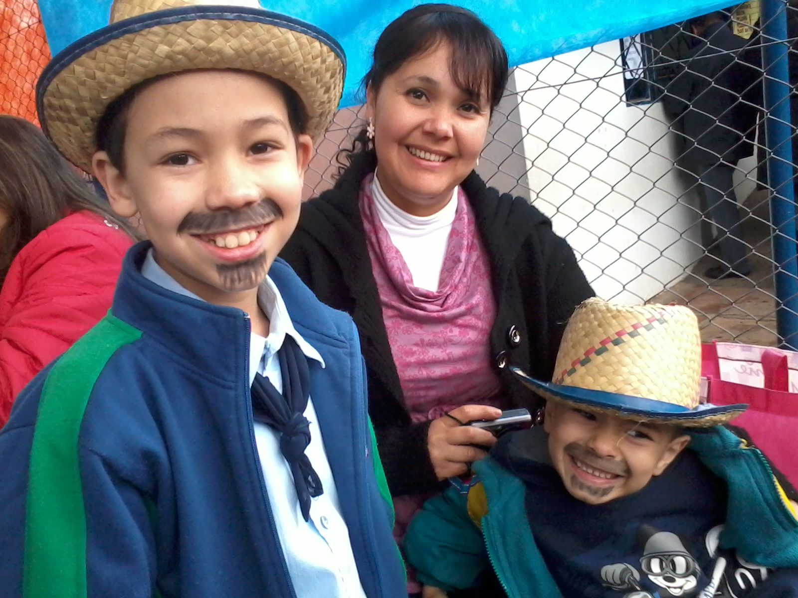

Audience
The goal is to support all businesses in the community. A chamber of commerce typically lets any business join, including competitors. That means every bakery in town can join the same chamber of commerce, even though they have similar target audiences.
You should join a chamber of commerce that you plan on being actively involved with. Joining a local chamber of commerce is usually best, considering the familiarity with the area you work in, but you can also join national and international chambers.
Personas
Maico Rodrigues
- Occupation: Bank Manager
- Education and more: 44 years old. Married, Post graduated Financial and Banking
- Interests: Have opportunities to make new contacts with clients and future clients.
- Social: He likes to travel and to help others.
- Technology: He has many devices in your home and job.
Cristina Araujo
- Occupation: Early Childhood Entrepreneur
- Education and more: 45 Years old. Married, has three boys, graduated in Pedagogy
- Interests: She wants to know more about Chamber and fostering her business.
- Social: Enjoys teaching, loves spending ime with his family. Very active and optimistic individual.
- Technology: This is one point she needs to work. She doesn't have much knowledge in the technological area but wants to go deeper
Scenarios
- Why is Canoas Chamber important to the city and my organization?
- Would there be an application process that I will follow to partner with Canoas Chamber?
- Are there samples of where similar chambers like Canoas Chamber has been successfully implemented?
- What are some of the design principles of Canoas Chamber?
- How would Canoas Cchamber assist in businesses with marketing?